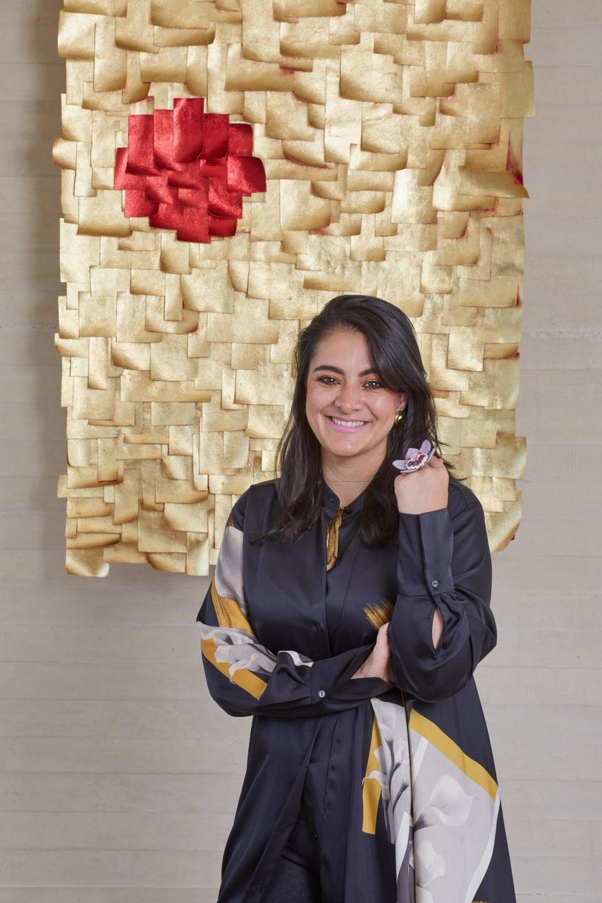

“Creo firmemente en el poder transformador del arte y en que a través de sus trazos es posible contar nuestra historia.”

Fotografía Diego Zamora
Una historia que encuentra su materia.
María Paula Alzate estudió Literatura en Bogotá y realizó una maestría en Medios, Literatura y Cultura en Alemania, país en el que vivió durante ocho años.
En 2019, después de visitar la casa museo de Guayasamín en Quito, decidió iniciar su carrera como artista. Desde el impulso y la intuición, comenzó a explorar el óleo y sus texturas.
¿Cómo aprendemos a crear cuando comprendemos que no controlamos la vida?
Desde esa pregunta investiga el tiempo, la huella y la pérdida, no como acontecimientos excepcionales, sino como fuerzas que transforman silenciosamente los cuerpos, la materia y la memoria. Su obra celebra la vida porque reconoce su fragilidad y entiende la transformación como una condición inevitable de la existencia.
Detalle · La magia del corazón, 2025 · Outside the Box
El óleo como materia viva.
El color toma cuerpo. El óleo se amasa, se estira y se transforma: deja de ser solo una superficie para convertirse en volumen.
Antes de asumirse como artista, mientras acompañaba comunidades y diversos grupos sociales afectados por el conflicto armado colombiano y procesos de construcción de paz, encontró en la filosofía japonesa del Kintsugi un punto de inflexión.
Comprendió que reparar no significa borrar una fractura ni regresar a un estado anterior, sino integrar la historia que contiene. Desde entonces, el Kintsugi dejó de ser una técnica para convertirse en una manera de comprender la memoria, la transformación y el cuidado.
Detalle · Wabi Sabi, 2023 · Kintsugi
La hojilla como reflejo.
La luz encuentra dónde detenerse. Sobre el lino, la hojilla dorada convive con el trazo y hace visible otra manera de mirar la superficie.
La maternidad aparece en su obra como una experiencia expandida de creación. Frente a la improbabilidad de ser madre biológica, encontró en el arte otra forma de gestar, cuidar y acompañar la vida.
Cada pintura, objeto y proceso se convierte en una práctica de espera, atención y presencia. Así como el óleo necesita tiempo para revelar su profundidad, su trabajo entiende la creación como un proceso que no puede acelerarse.
Detalle · Kintsugi for the soul, 2023 · Tejidos
Tejer también es cuidar.
La lana y los textiles se encuentran con el acrílico, los pasteles grasos y la hojilla. Cada textura conserva su voz sobre el lienzo.
En un mundo saturado de imágenes inmediatas y conclusiones rápidas, su trabajo busca generar una pausa. Crea espacios de contemplación donde mirar no sea suficiente y donde el espectador pueda detenerse, sentir y reflexionar sobre el tiempo, los afectos, el cuerpo, la presencia de quienes amamos y nuestra propia existencia.
Trabaja desde la sutileza, los matices y aquello que apenas se insinúa, creando espacios donde lo no dicho también pueda ser sentido. Más que representar respuestas, su obra propone convivir con preguntas que permanecen abiertas.
Óleo, acrílico, madera, fibra de maíz y lienzo: materiales distintos que abren posibilidades para el color, la luz y la memoria.
Trayectoria
Exposiciones y proyectos.
Desde 2021, su obra ha sido incluida en exposiciones individuales y colectivas en Colombia, Estados Unidos, Japón, Italia, Costa Rica, Panamá y Suecia.
Amor, aquí hay vida.
Fundación Santa Fe · Bogotá · Exposición individual, 2024
Un recorrido por la exposición: las obras, sus detalles y el espacio que las acogió.